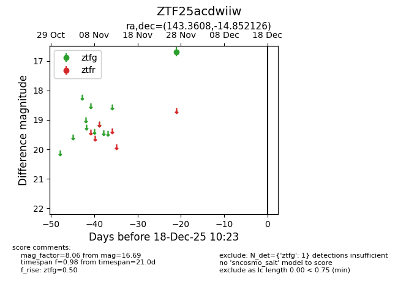
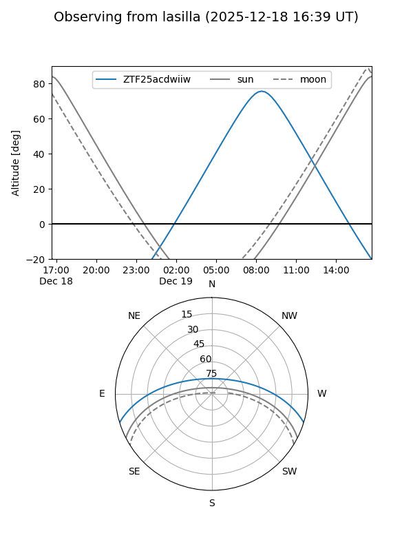
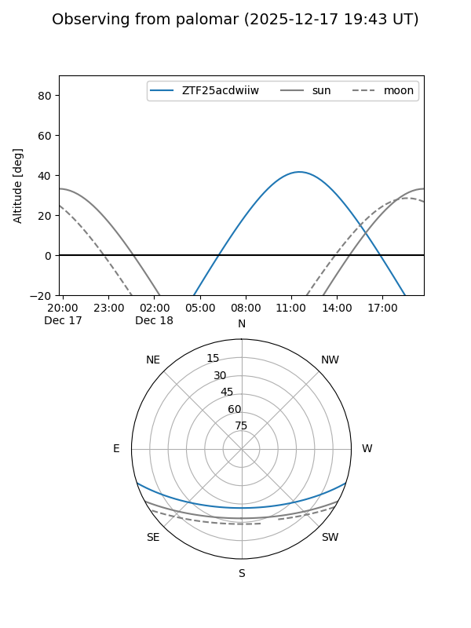

ZTF25acdwiiw
Target ZTF25acdwiiw at 2025-12-18 11:17
Aliases and brokers:
FINK: fink-portal.org/ZTF25acdwiiw
Lasair: lasair-ztf.lsst.ac.uk/objects/ZTF25acdwiiw
ALeRCE: alerce.online/object/ZTF25acdwiiw
alt names
ZTF25acdwiiw (ztf,fink_ztf)
Coordinates:
equatorial (ra, dec) = 143.3608,-14.85213
equatorial (HMS+DMS) = 09:33:26.60,-14:51:07.66
galactic (l, b) = (247.9181,+26.22043)
Photometry
last ztfg=16.69
1 ztfg detections
Lightcurve

Visibility


Additional plots